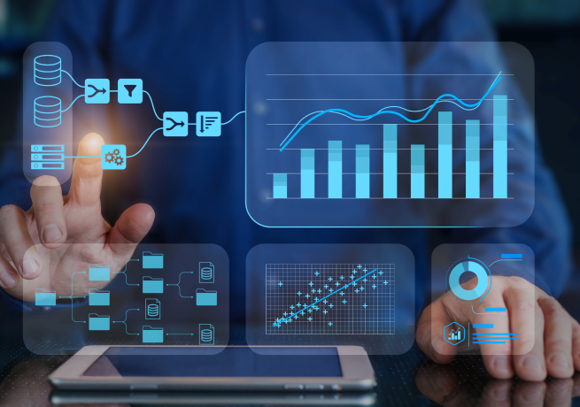
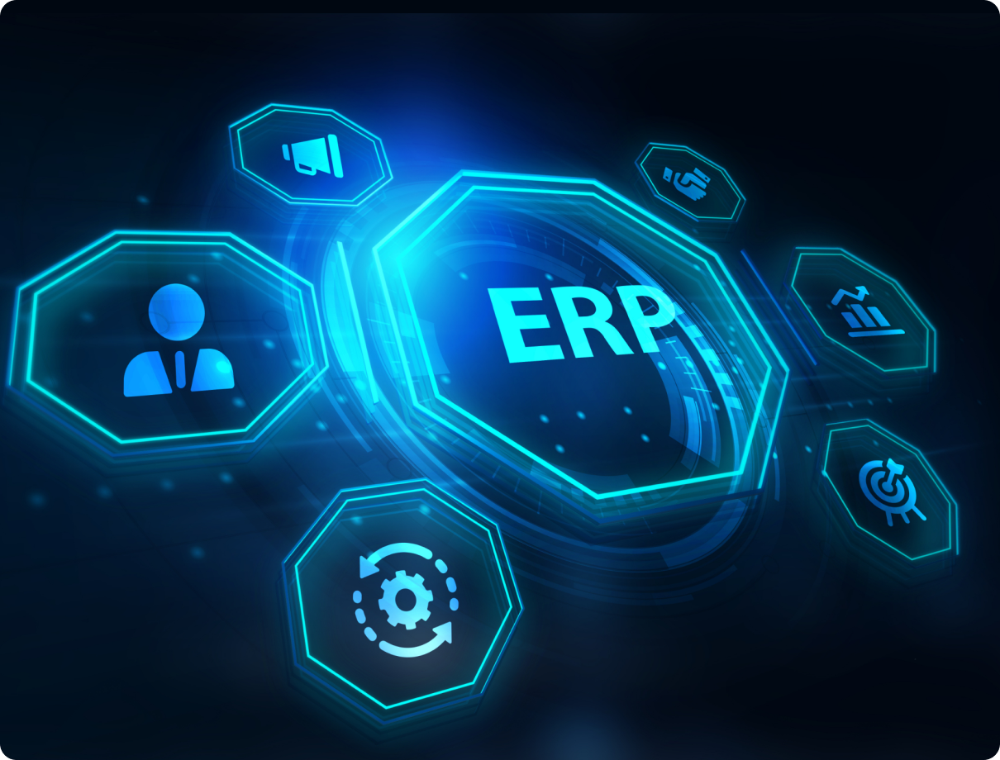
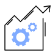
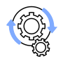
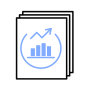
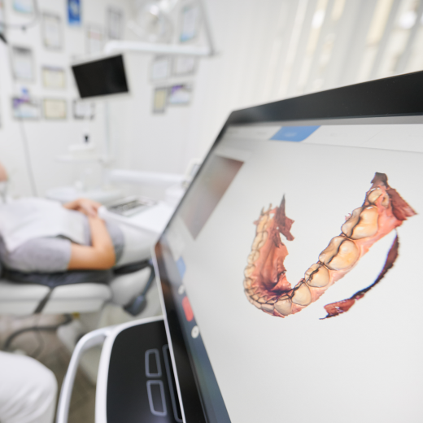
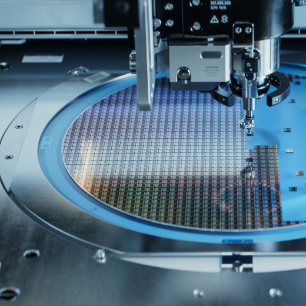
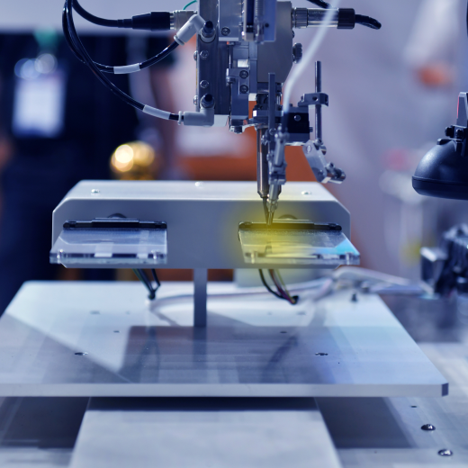
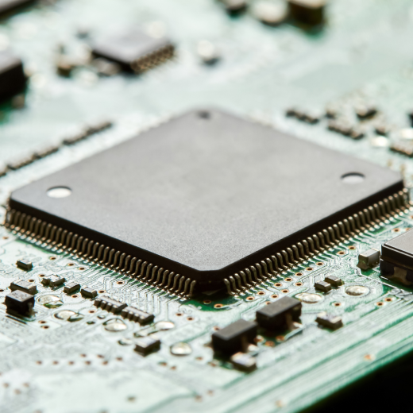

@@include('./pages/includes/head.html', {
pageTitle : 'ERP 구축 | 서비스 - 미라콤아이앤씨',
ogTitle: 'ERP 구축 | 서비스 - 미라콤아이앤씨',
ogDesc: '삼성그룹 및 국내외 제조기업에서 축적한 ERP, MES 통합 구축 노하우로 경영과 생산관리가 완벽하게 통합된 선진 경영 시스템을 제공합니다.',
metaDescription: '삼성그룹 및 국내외 제조기업에서 축적한 ERP, MES 통합 구축 노하우로 경영과 생산관리가 완벽하게 통합된 선진 경영 시스템을 제공합니다.',
metaKeywords: 'Miracominc,miracom,미라콤아이앤씨,미라콤,ERP,ERP구축,스마트팩토리,smartfactory,SAP,경영시스템,생산계획,구매,생산실행,재고관리,출하,판매,재무',
ogUrl: 'https://miracom-inc.com',
ogImage: '../../assets/images/og/miracom-og.png',
ogType: 'article',
cssPath : '../../assets/css/common.min.css'
})
@@include('../src/pages/includes/header.html', {
type : 'sub-type',
gnb : true,
subDepth: true,
subArr : ['미라콤아이앤씨', '서비스 및 솔루션', 'ERP 구축']
})
서비스 및 솔루션
ERP 구축
ERP와 스마트팩토리 솔루션을 연계한 제조기업의 비즈니스 혁신과 변화
서비스 개요
미라콤아이앤씨의 ERP 서비스는 삼성그룹 및 국내외 제조 기업에서 20년간 축적한 노하우 및 전문성을 바탕으로 SAP S/4 HANA 기반 선진 경영 시스템을 제공합니다.
글로벌 No.1 ERP
글로벌 시장에서 검증된 SAP ERP솔루션으로 안정적인 시스템 구현
ERP Driven-PI
고객의 요구사항과 이슈를 면밀히 분석하여 기업 특성에 맞는 선진 프로세스 적용
원스톱 서비스
ERP 구축, 라이선스 공급/MA 및 시스템 운영까지 수행
필요성
기업 회계의 투명성과 데이터 기반 경영 관리 체계를 갖추기 위하여…
경영 투명성 요구 강화
경영 재무 건정성, ESG 지표, 컴플라이언스 준수 등 경영 투명성 요구 강화에 따른 시스템 기반 통합 관리 및 모니터링
데이터 기반 의사결정 체계 필요
기업활동 결과 도출된 정보의 정확한 분석과 예측데이터 기반의 의사결정 체계 요구
특장점

Point 1. 서비스
국내 유일 ERP-MES 시스템 통합 구축
풍부한 경영시스템(ERP)과 생산시스템(MES) 구축 경험 및 노하우를 기반으로 경영과 생산관리가 완벽하게 통합된 Intelligent Enterprise 구현
생산계획-구매-생산실행-재고관리-출하-판매까지 ERP와 MES 시스템간
인터페이스 최적화
다양한 제조 현장 경험과 업종 이해를 통한 최적의 프로세스 제안
ERP-MES 통합 수행으로 비용, 기간, 리스크 최소화
Point 2. 인력
최고의 기술/업종 전문가 집단
10년 이상 프로젝트 경험을 보유한 자사 인력 및 파트너 인력
삼성 그룹 및 업종별 선도기업의 프로세스와 시스템 구축 노하우 보유
구매, 생산, 관리, 재무 등 ERP 모듈별 전문 컨설턴트에 의한 원격 운영 서비스 제공

Point 3. 기술
ERP 토탈 서비스 및 신기술 보유
SAP 골드 파트너로 PI 컨설팅부터 구축, 운영 까지 원스톱으로 지원 가능
PCE*, BTP*, Fiori 등 ERP 신기술 적용
*PCE : Private Cloud Edition, BTP : Business Technology Platform
Highway101(EAI) 및 FMB(시각화솔루션) 연계 활용 가능
고객 혜택
전사 업무 혁신 가속화
전사 최적화 관점에서 선도기업의 경영프로세스 내재화와 일하는 방식의 혁신으로 경쟁우위 선점이 가능합니다.

데이터 기반 인사이트 확보
발생 데이터를 Real-Time으로 분석하고, 결과를 직관적으로 볼 수 있어 합리적 의사결정 및 예측력이 높아집니다.
확장 및 대응 용이
전사 표준 기준정보/조직체계를 정의하여 기업의 성장을 고려한 ERP 시스템 구축으로 관계사 확산 및 빠른 경영환경 변화에 유연한 대응이 가능합니다.

최신 기술로 IT 선진화
In-Memory 기반의 빠른 데이터 처리 및 획기적으로 개선된 데이터 분석/리포팅, 단순하고 조작이 쉬운 UX로 업무 효율과 생산성이 개선됩니다.

사례 소개

3D 구강 스캐너 솔루션 회사인 고객사는 ERP를 중심으로 제조 현장을 관리하여 분산된 품질 정보로 인해 제조 현황 전체에 대한 가시성 확보와 품질 데이터를 실시간으로 추적 관리하기 어려운 문제가 있었습니다. 분산된 데이터를 체계적으로 관리하고자 ERP의 자재/공정 정보, 생산/불량 실적, 출하 정보 등을 MES 시스템에 연계하여 휴먼 에러를 제거해 생산 활동 최적화를 이룰 수 있었습니다. 이를 통해 글로벌 덴탈 시장에서 빠르게 성장할 수 있는 기반을 마련할 수 있었습니다.

글로벌 전력 반도체 제조 기업인 고객사는 조직의 확대에 따라 매출 성장이 예상되어 전사 업무 통합을 위한 차세대 ERP 시스템을 구축할 필요가 있었습니다. 생산관리 측면에서 MES 시스템과의 연계로 생산성, 가동률, 달성률 등 정확한 실적 관리를 통해 제조 경쟁력을 강화하고자 ERP 코어 모듈에 미라콤의 제조실행 솔루션을 연계하였습니다. ERP, MES 모두 미라콤이 직접 구축하여 시스템 간의 경계없이 효율적으로 통합 솔루션을 구축할 수 있었습니다. 이를 통해 전사 프로세스 개선 및 모니터링 강화로 데이터 신뢰성을 확보하여 사업 확대에 따른 대응 체계를 확립할 수 있었습니다.
도로안전시설 전문 제조 기업인 고객사는 단열재, 태양광 등 다양한 신사업 확대를 추진하고 있어 이를 효과적으로 지원할 수 있는 확장성과 유연성을 고려한 통합 시스템을 구축할 필요가 있었습니다. 미라콤은 건설-제조 분야에서 다양한 ERP 구축 프로젝트를 진행한 경험을 바탕으로 도로안전, 단열재 등 다양한 비즈니스 프로세스를 구현하는 것을 목표로 PI 중심의 ERP를 구축하였습니다. 고객사의 중장기 경영 전략을 리뷰하고, 전사 혁신 과제를 정의한 TO-BE IT 운영 모델을 바탕으로 ERP시스템 운영전략을 설계하였습니다. 이를 통해 업무 자동화를 실현하여 유지보수 업무가 감소되었고, 업무 속도가 향상되는 결과를 확인할 수 있었습니다.

진보된 기술력으로 반도체 후공정 분야의 혁신을 주도하는 기업인 고객사는 노후화된 IT 환경 때문에 업무 프로세스를 재정비할 필요가 있었습니다. 미라콤은 표준화된 공통 코드 체계를 구성하여 표준 프로세스가 적용된 ERP 시스템을 구축할 것을 제안하였습니다. ERP 기반 표준 구매 관리로 전사 재고 가시성을 위한 일원화된 관리 체계와 자재소요계획 고도화를 구현하였습니다. ERP와 함께 MES 고도화를 진행하여 경영진의 의사결정 지원을 강화하였고, 생산/구매/납품의 전반적인 업무 효율이 향상되는 성과를 확인할 수 있었습니다.

반도체 장비 제조 선도 기업인 고객사는 글로벌 기업으로 도약하고자 전사 자원을 효율적으로 운영할 수 있는 통합 시스템을 구축할 필요가 있었습니다. 글로벌 확장에 유연한 프로세스를 적용하고, 고객중심으로 업무처리 방식을 개선하고자 ERP뿐만 아니라 e-Accounting, HR, Procurement 시스템을 통합하여 구축하였습니다. 글로벌 NO.1 솔루션을 적용하여 데이터 중복으로 인한 업무 비효율성 제거하였고, 데이터의 무결성을 확보하였습니다. 이를 통해 기업의 가치를 높일 수 있는 혁신적인 전사 업무 프로세스를 확립할 수 있었습니다.